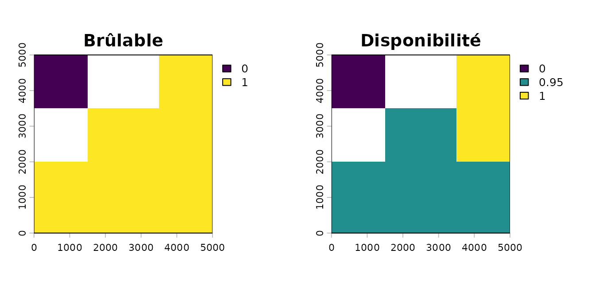
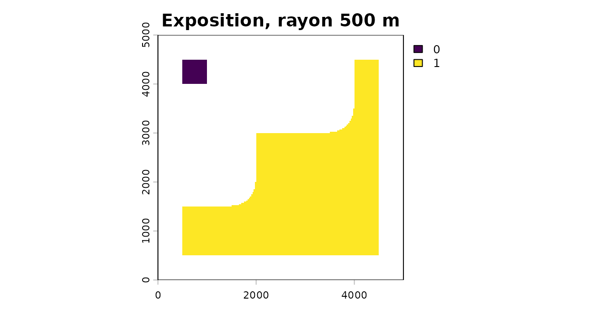
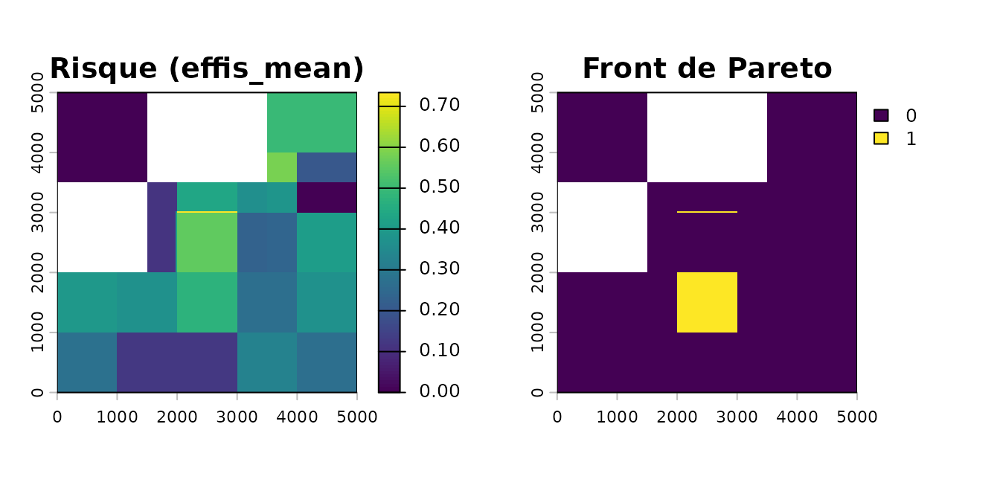
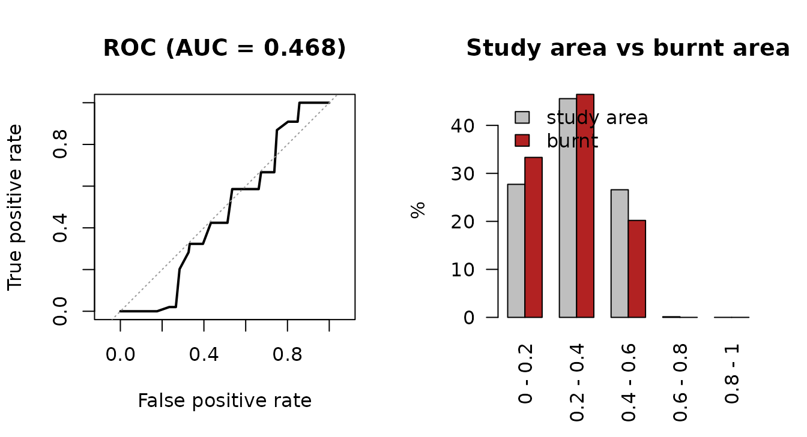

Chaîne complète : du combustible au risque validé
Source:vignettes/firexpovulnR.Rmd
firexpovulnR.RmdCette vignette déroule la chaîne complète, du combustible au risque validé, sans réseau. Les sources réelles sont montrées à leur place, dans des blocs non exécutés ; le paysage utilisé ici est synthétique, pour que la vignette soit rejouable partout et rapide à construire.
Elle sert aussi à dire, à chaque étape, ce qui est sourcé et ce qui ne l’est pas. Le package impose une seule chose : que ce partage soit lisible.
1. Le paysage d’étude
On fabrique un massif de 5 km de côté : une pinède au sud, une chênaie verte au centre, du maquis à l’est, de l’eau au nord-ouest.
rect <- function(x1, x2, y1, y2) {
st_polygon(list(cbind(c(x1, x2, x2, x1, x1), c(y1, y1, y2, y2, y1))))
}
bdforet <- st_sf(
code_tfv = c("FF2-57-57", "FF1G06-06"), # pin d'Alep, chêne vert
geometry = st_sfc(rect(0, 5000, 0, 2000), rect(1500, 3500, 2000, 3500),
crs = 2154)
)
corine <- st_sf(
code_18 = c("323", "512"), # sclérophylles, plans d'eau
geometry = st_sfc(rect(3500, 5000, 2000, 5000), rect(0, 1500, 3500, 5000),
crs = 2154)
)
aoi <- st_as_sf(st_sfc(rect(0, 5000, 0, 5000), crs = 2154))En production, ces deux couches viennent des services :
bdforet <- fev_data(fev_fetch_bdforet(aoi, millesime = "auto", dept = "83"))
corine <- fev_data(fev_fetch_corine(aoi, year = 2018))millesime = "auto" n’est pas une devinette. L’IGN
définit la date de validité de la BD Forêt v2 comme celle de la
prise de vue de la BD ORTHO sur laquelle elle a été
photo-interprétée, et ces dates de vol sont publiées dans le graphe de
mosaïquage archivé. fev_bdforet_millesime() va les chercher
:
fev_bdforet_millesime(aoi)
#> dep pva date_vol year n_polygons pct_area
#> 83 2008 2008-06-23 2008 2 43.8
#> 83 2014 2014-07-17 2014 6 56.2Un département étant revolé tous les cinq ans environ, la fenêtre
2007-2018 en contient souvent deux, et l’IGN ne publie pas laquelle a
servi. La fonction rend donc les candidats plutôt que d’en inventer un ;
strategy = "oldest" prend le plus ancien, qui maximise
l’écart rapporté en section 7 — on penche du côté de signaler le biais
plutôt que de le masquer.
2. Combustible
fev_fuel_source() rasterise sur une grille calée, à une
résolution qui est un paramètre explicite. Le millésime de la BD Forêt
est obligatoire : sans lui, le contrôle de biais
temporel de la section 7 ne peut pas tourner.
primaire <- fev_fuel_source(bdforet, type = "bdforet_v2", res = 25,
aoi = aoi, millesime = 2014)
auxiliaire <- fev_fuel_source(corine, type = "clc_2018", res = 25,
aoi = aoi, millesime = 2018)
fuel <- fev_fuel_merge(primaire, auxiliaire)
#> "clc_2018" filled 10800 cells (27%) that
#> "bdforet_v2" left unmapped.
fuel
#>
#> ── fev_fuel_source: bdforet_v2+clc_2018 ────────────────────────────────────────
#> • Millesime: bdforet_v2 2014, clc_2018 2018
#> • Registers: "categorical"
#> • Categorical: 200 x 200 cells at 25 EPSG:2154, 4 classes
#> • Per-pixel source: "bdforet_v2" and "clc_2018"
#> • Lookup: 76 rows, 21 flagged ambiguous
#>
#> Provenance: 2 sources, 3 steps.La fusion est hiérarchique et laisse une trace : la couche
source dit, pour chaque pixel, de quel jeu de données vient
sa classe. Sans elle, un pixel de 25 m issu de la BD Forêt et un pixel
rééchantillonné depuis une unité CORINE de 25 ha se ressemblent et ne
veulent pas dire la même chose.
summary(fuel)
#>
#> ── fev_fuel_source summary: bdforet_v2+clc_2018 ────────────────────────────────
#> class cells pct fuel_type burnable
#> FF2-57-57 16000 50.63 conifer_closed TRUE
#> 323 7200 22.78 shrubland TRUE
#> FF1G06-06 4800 15.19 sclerophyll_closed TRUE
#> 512 3600 11.39 non_fuel FALSELes tables de correspondance sont justifiées ligne par ligne, et 4 des 32 lignes de la BD Forêt comme 17 des 44 de CORINE sont marquées ambiguës :
clc <- fev_fuel_lookup("clc")
head(clc[clc$confidence == "ambiguous", c("code", "label", "notes")], 3)
#> code label
#> 2 112 Discontinuous urban fabric
#> 6 124 Airports
#> 10 141 Green urban areas
#> notes
#> 2 The wildland-urban interface itself. Gardens, hedges and unmanaged plots inside it do carry fire, and this is where exposure assessment matters most -- but the class records buildings, not fuel. Treated as non-fuel here and as an ASSET in fev_vuln_layer(), which is the honest split.
#> 6 Runways are non-fuel but airport grassland can be extensive. Below the mapping unit, so not separable.
#> 10 Parks and cemeteries: real vegetation, but irrigated, fragmented and managed. Burnable TRUE, with a low availability weight, rather than excluded outright.De là viennent le masque brûlable et la disponibilité pondérée. Les poids ne sont sourcés nulle part : ce sont une convention du package, et la fonction le dit à chaque appel.
brulable <- fev_fuel_binary(fuel)
poids <- fev_fuel_weights(quiet = TRUE) # quiet ici seulement : voir ?fev_fuel_weights
dispo <- fev_fuel_availability(fuel, weights = poids)
par(mfrow = c(1, 2), mar = c(2, 2, 2, 4))
plot(fev_data(brulable), main = "Brûlable")
plot(fev_data(dispo), main = "Disponibilité")
3. Exposition
L’anneau focal reproduit la géométrie de
fireexposuR::fire_exp(), cellule évaluée exclue. Les rayons
viennent de travaux canadiens ; la métrique a été validée au Portugal,
le rayon ne l’est pas sur chêne vert ou maquis.
expo <- fev_exposure(brulable, radius = 500, type = "ember", quiet = TRUE)
expo
#>
#> ── fev_exposure_layer: exposure ────────────────────────────────────────────────
#> • 200 x 200 cells at 25, EPSG:2154
#> • Units: "proportion of surrounding fuel, 0-1"
#> • Range: 0 and 1
#> • Mapped: 35.5% of cells
Depuis un enjeu ponctuel, fev_directional() répond à une
autre question : d’où un feu pourrait-il arriver.
maison <- c(2500, 2500)
dir <- fev_directional(expo, point = maison,
seg_lengths = c(600, 600, 600), interval = 10)
#> Warning: 37.4% of transect samples fell outside the exposure layer.
#> ℹ Those samples are dropped, so the affected segments are judged on the part of
#> the transect that is mapped -- which biases them toward whatever the near
#> field looks like.
#> ℹ Use a layer extending at least 1800 beyond the point.
dir
#>
#> ── fev_directional ─────────────────────────────────────────────────────────────
#> • Point: 2500 and 2500 (EPSG:2154)
#> • 36 transects every 10 degrees, 3 segments of 600, 600, and 600
#> • Thresholds: exposure 0.6, viability 0.8
#> ! 18 of 36 bearings (50%) offer a continuous high-exposure pathway.
#> • Bearings: "60", "70", "80", "90", "100", "110", "120", "130", "140", "150",
#> "160", "170", "180", "190", "200", "210", "220", and "230"4. Danger météorologique
Le cœur méthodologique est la calibration en percentiles : un seuil FWI absolu redessine surtout la climatologie, alors qu’un rang percentile dit la même chose dans le Var et en Bretagne.
# Série journalière synthétique sur une grille kilométrique.
grille_meteo <- rast(nrows = 5, ncols = 5, xmin = 0, xmax = 5000,
ymin = 0, ymax = 5000, crs = "EPSG:2154", nlyr = 730)
values(grille_meteo) <- matrix(
abs(rnorm(25 * 730, mean = 15, sd = 12)), nrow = 25
)
time(grille_meteo) <- seq(as.Date("2019-01-01"), by = "day", length.out = 730)En production, la série vient du produit historique CEMS :
fwi <- fev_fetch_fwi(aoi, period = c("1991-01-01", "2020-12-31"))
danger_pct <- fev_fwi_percentile(grille_meteo, ref_period = c(2019, 2020))
danger_pctLes deux jeux de seuils publiés diffèrent d’un facteur trois, et une
carte classée ne dit pas lequel l’a produite — c’est pourquoi
fev_danger_class() l’inscrit dans la provenance.
fev_fwi_classes()[, c("class", "lower", "upper")]
#> class lower upper
#> 1 Low -Inf 11.2
#> 2 Moderate 11.2 21.3
#> 3 High 21.3 38.0
#> 4 Very High 38.0 50.0
#> 5 Extreme 50.0 70.0
#> 6 Very Extreme 70.0 Inf
fev_fwi_classes("caliver_europe")[, c("class", "lower", "upper")]
#> class lower upper
#> 1 Very Low -Inf 2
#> 2 Low 2 5
#> 3 Moderate 5 10
#> 4 High 10 19
#> 5 Very High 19 33
#> 6 Extreme 33 Inf5. Le décalage d’échelle
Le danger est ici kilométrique et l’exposition décamétrique. C’est le point le plus conséquent de toute la chaîne, et il passe par une seule fonction, qui avertit et journalise.
dernier_jour <- fev_data(danger_pct)[[terra::nlyr(fev_data(danger_pct))]]
pile <- fev_align(danger = dernier_jour, disponibilite = fev_data(dispo),
exposition = fev_data(expo))
#> Warning: Aligning layers whose cell sizes differ by a factor of 40.
#> ℹ Finest "disponibilite" at 25; coarsest "danger" at 1000.
#> ℹ Target grid: 25 (finest).
#> ℹ Each coarse cell is copied across about 1600 fine cells. That adds
#> resolution, not information.
#> ℹ The ratio is recorded in the provenance.
pile
#>
#> ── fev_stack ───────────────────────────────────────────────────────────────────
#> 3 layers, working CRS 2154
#> • danger: 200 x 200 cells, res "25 x 25"
#> • disponibilite: 200 x 200 cells, res "25 x 25"
#> • exposition: 200 x 200 cells, res "25 x 25"
#>
#> Provenance: 0 sources, 2 steps. See `fev_provenance()`.fev_align() est la seule fonction du
package autorisée à changer une grille. Toutes les autres refusent des
entrées de grilles différentes et y renvoient. Le rapport d’échelle part
dans la provenance :
etapes <- fev_provenance(pile)$steps
etapes[[length(etapes)]]$params[c("scale_ratio", "cells_per_coarse_cell",
"direction", "methods")]
#> $<NA>
#> NULL
#>
#> $<NA>
#> NULL
#>
#> $<NA>
#> NULL
#>
#> $<NA>
#> NULL6. Vulnérabilité et risque
Aucune source d’enjeux n’est imposée. Ici, une densité bâtie et un habitat protégé, tous deux synthétiques.
gabarit <- pile$exposition
population <- rast(gabarit)
values(population) <- 0
population[80:120, 80:120] <- 500 # un village
natura <- rast(gabarit)
values(natura) <- 0
natura[1:60, 120:200] <- 1 # un site protégé
vuln <- fev_vuln_stack(
humaine = fev_vuln_layer(population, method = "log", name = "pop"),
ecologique = fev_vuln_layer(natura, method = "minmax", name = "n2000"),
weights = c(0.6, 0.4)
)
#> Warning: "log" normalisation rescales on this extent's own range.
#> ℹ Observed range 0 and 500. The same cell scores differently under a different
#> AOI, so vulnerability layers are not comparable between study areas.
#> ℹ Shown once per session; recorded in the provenance every time.Le danger composite croise météo et combustible ; le risque croise danger et vulnérabilité.
danger <- fev_danger_index(pile$danger, pile$disponibilite,
normalise = "percentile")
risque <- fev_risk(danger, vuln, normalise = "none")method = "pareto" fait autre chose, et c’est ce que fait
réellement le workflow CLIMAAX : il rend un ensemble,
pas un score — les cellules qu’on ne peut améliorer sur une dimension
sans dégrader l’autre.
front <- fev_risk(danger, vuln, method = "pareto", normalise = "none")
global(fev_data(front), "sum", na.rm = TRUE)
#> sum
#> risk 1640
par(mfrow = c(1, 2), mar = c(2, 2, 2, 4))
plot(fev_data(risque), main = "Risque (effis_mean)")
plot(fev_data(front), main = "Front de Pareto")
7. Validation, et le biais temporel
C’est ici que le millésime sert. Chaque feu est comparé à la date du combustible, et la fonction dit avec un chiffre quelle part de la surface brûlée postdate ce millésime.
feux <- st_sf(
FIREDATE = c("2016-08-02", "2022-07-14"),
geometry = st_sfc(rect(200, 2200, 200, 1400),
rect(3600, 4900, 2200, 3400), crs = 2154)
)En production :
feux <- fev_data(fev_fetch_burnt(aoi, period = c("2016", "2023")))Et le millésime n’a pas à être redonné du tout si la couche vient de
la chaîne avec millesime = "auto" : il voyage dans la
provenance depuis fev_fuel_source().
val <- fev_validate(risque, feux, millesime = 2014)
#> Warning: 39.4% of the burnt area in this sample postdates the fuel vintage (2014) by
#> more than 5 years.
#> ℹ 1 of 2 fires. Those burnt a landscape the fuel layer does not describe.
#> ℹ They are kept: pass `max_lag_years` to drop them.
val
#>
#> ── fev_validation ──────────────────────────────────────────────────────────────
#> • Fuel vintage: 2014
#> • 2 fires supplied, 2 used
#> ! 39.4% of burnt area postdates the vintage beyond the lag.
#> • 31600 cells, 6336 burnt (20.1%)
#> • AUC: 0.468
#> ! An AUC this close to 0.5 is a coin toss.
#>
#> class cells_total cells_burnt pct_of_area pct_of_burnt ratio
#> 0 - 0.2 8759 2112 27.72 33.33 1.20
#> 0.2 - 0.4 14400 2944 45.57 46.46 1.02
#> 0.4 - 0.6 8401 1280 26.59 20.20 0.76
#> 0.6 - 0.8 40 0 0.13 0.00 0.00
#> 0.8 - 1 0 0 0.00 0.00 NaN
#>
#> ℹ Cells are not independent observations -- fires are contiguous -- so no confidence interval is reported. See `fev_validate()`.Le millésime n’a pas eu besoin d’être redonné quand la couche vient
de la chaîne : il voyage dans la provenance depuis
fev_fuel_source(). Et si on veut écarter les feux qui
postdatent trop le combustible :
val_filtre <- fev_validate(risque, feux, millesime = 2014, max_lag_years = 5)
#> Warning: 39.4% of the burnt area in this sample postdates the fuel vintage (2014) by
#> more than 5 years.
#> ℹ 1 of 2 fires. Those burnt a landscape the fuel layer does not describe.
#> ℹ They are dropped, on your `max_lag_years`.
val_filtre$temporal$table
#> lag_years n_fires area_ha pct_area
#> 1 <= 0 (fire before the vintage) 0 0 0.0
#> 2 1 to 5 1 240 60.6
#> 3 > 5 1 156 39.4
plot(val)
8. Provenance
Tout ce qui précède est rejouable parce que chaque paramètre utilisé — y compris ceux qui n’ont jamais été tapés — est écrit au moment où il sert.
prov <- fev_provenance(pile)
vapply(prov$steps, function(s) s$fun, character(1))
#> [1] "fev_align" "fev_stack"
fev_provenance(pile, file = "provenance.yml")Ce que la chaîne ne sait pas
Quatre limites, par ordre d’importance décroissante.
Le sous-étage. Ni CORINE ni la BD Forêt ne décrivent
la strate basse ni la charge de combustible. Une futaie de chêne vert
avec un sous-bois dense et la même sans sous-bois sont
identiques dans les deux bases, alors que la
propagation de surface en dépend directement. C’est la principale
faiblesse méthodologique du package, et c’est ce que le LiDAR HD
permettra de lever (phase 8) — le registre continu de
fev_fuel_source() existe déjà pour l’accueillir.
Les poids de disponibilité. Dix-neuf nombres qui ne
viennent d’aucune publication. L’ordre est défendable, les valeurs sont
rondes et non mesurées. Elles partent dans la provenance avec
weights_sourced = FALSE.
Les rayons d’exposition. Canadiens à l’origine, avec une validation portugaise de la métrique (Khan et al. 2025) mais aucune calibration sur chêne vert, garrigue ou maquis.
Le décalage d’échelle. Descendre un FWI de 25 km sur
une grille de 25 m ajoute de la résolution, pas de l’information.
fev_align() le dit à chaque fois et l’inscrit ; la carte,
elle, ne le dira pas à votre lecteur.
Coût, sur une emprise réelle
La fenêtre focale est exprimée en mètres mais matérialisée en cellules : son coût varie comme l’inverse de la puissance quatrième de la taille de maille. Diviser la résolution par deux multiplie le travail par seize.
Mesures sur cette machine, combustible aléatoire, rayon 500 m :
| Emprise | Résolution | Cellules | Fenêtre | Temps | Pointe mémoire |
|---|---|---|---|---|---|
| 100 km² | 25 m | 160 000 | 1 256 | 1,0 s | — |
| 400 km² | 25 m | 640 000 | 1 256 | 4,5 s | — |
| 6 006 km² (un département) | 25 m | 9 610 000 | 1 256 | 61 à 83 s | 155 Mo |
L’écart sur la dernière ligne est la variation d’une exécution à l’autre sur la même machine, pas deux mesures différentes : c’est la largeur honnête d’un chronométrage unique. Le débit mesuré tourne autour de 170 millions d’opérations pondérées par seconde.
Un département tient donc en une minute environ, en écrivant le résultat par blocs :
expo <- fev_exposure(brulable, radius = 500,
filename = "exposition_var.tif",
wopt = list(progress = 1))À 2 m en revanche — la résolution d’un MNT LiDAR — la fenêtre passe à
501 × 501 et le même département demande environ mille fois plus de
travail. fev_exposure() estime ce coût avant de commencer
et propose une taille de maille, plutôt que de sembler bloqué.